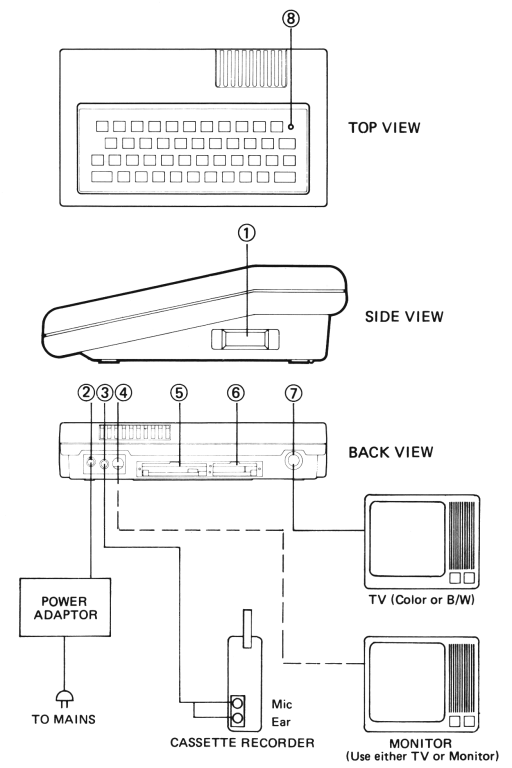

USER MANUAL
Box Contents
When you open the box you should find the following:
- This User Manual.
- Basic Reference Manual.
- A booklet named 'BASIC APPLICATION PROGRAMS'.
- Your Colour Computer.
- A Power Adaptor.
- A Cord to connect your computer to a TV Antenna Input.
- A Cord to connect your computer to a standard audio casette recorder.
- A Demonstration Tape
To get your Computer working you will need a colour TV, a B/W TV or a Video Monitor
Procedure For Setting Up the Colour Computer
- Disconnect the aerial cord from your television set. Connect a cord from the TV socket on your computer to the aerial socket on your TV set.
- Connect your power adaptor to a normal wall AC outlet.
- Connect the adaptor plug to the power socket on your computer.
- Switch on the power by pressing the power switch. Check the power indication lamp on the main console. If the power is on, there is a red light. If there is no red light, switch off and check all your connections.
- Turn on the television set and select channel 1 (VHF)
- If the screen shows a title message and a green square with the word READY, then the set-up is all right.
- If the screen does not show the above message, switch off the power of your computer for 10 seconds and switch on again.
- If after several attempts you still do not succeed, switch off the power and check all the connections.
- If a Monitor is connected (use the Monitor Socket), the mentioned message should come out when you turn on the power of your computer. If you cannot get this message, turn off the power to your computer and check all the connections. (Also check the BRIGHTNESS level of the MONITOR.)
Diagram 1

Connections and Switch
- ON/OFF Switch
This controls the power supply to the computer. when it is switched on, a red indicator light (8) should show at the top right hand corner of the keyboard.
- Power Socket
The cord from the power adaptor is connected here.
- Cassette Socket
This is the cassette input/output socket. Your cassette recorder is connected here.
- Monitor Socket
If you are using a Video Monitor, then it is connected at this location.
- Memory Expansion
If you decide to add a memory expansion module to your computer, just remove the cover from this aperture and insert the memory expansion module. (BE SURE TO TURN OFF THE POWER BEFORE INSERTING OR REMOVING ANY EXPANSION MODULE.)
- Peripheral Port
Peripherals such as the Printer Interface module or Joystick are connected at this location. (BE SURE TO TURN OFF THE POWER BEFORE INSERTING OR REMOVING ANY EXPANSION MODULE.)
- TV Socket
The cord connecting the television antenna socket to your computer is connected here. Make sure your TV is set for channel 1 (VHF).
- Indicator Light
This Indicates the power supply to your computer. When the power switch is turned on, it should glow.
Precautions
To ensure that your computer gives long and trouble-free service, please observe the following precautions:
- Keep the main unit away from liquids.
- Avoid exposing the main unit to excessive heat. Store in a dry place.
- Switch off the power and disconnect the power plug when not in use.
- Do not drop the main unit. Handle with care.
- Make sure the power is turned off when inserting or removing any expansion modules such as the Memory Expansion Module or Printer Interface Module.
Trouble Shooting Checklist
Symptom
- No Indicator Light
- The Mains supply not turned on at the power outlet.
- The Power Adaptor not properly plugged into the power outlet.
- Power switch not turned on.
- The Power Plug not correctly plugged into the computer.
- No Screen Display
- Aerial cord not properly connected or badly plugged in.
- The TV set not properly tuned.
-Misconnect the TV set to the Monitor socket.
- Misconnect the Monitor to the TV socket.
- Screen Display without the READY signal
- Improper set-up procedure. Try switching off, waiting 10 seconds, then switching on again.
- Abnormal Performance
- Improper set-up procedure. Try switching off, waiting 10 seconds, then switching on again.
- Cassette Loading and Saving Won't Work
- Cassette Interface Cord not properly connected or badly connected. (Check that you have the MIC and EAR plugs in the correct recorder sockets.
- The tone and volume level of the cassette recorder not set at proper range. You may have to experiment with different volume settings to find which level is correct.
If none of the above work, please contact your nearest Dealer.
NOTE ON E-TEXT VERSION
This E-Text is supplied to the VZ-200 enthusiast community at no charge and on the assumption that Video Technology Limited and Dick Smith Electronics have no objection to obsolete databooks being re-distributed in this way provided they are properly attributed.
The copyright (c)1983 remains with Video Technology Limited, Hong Kong.
{kind=link}